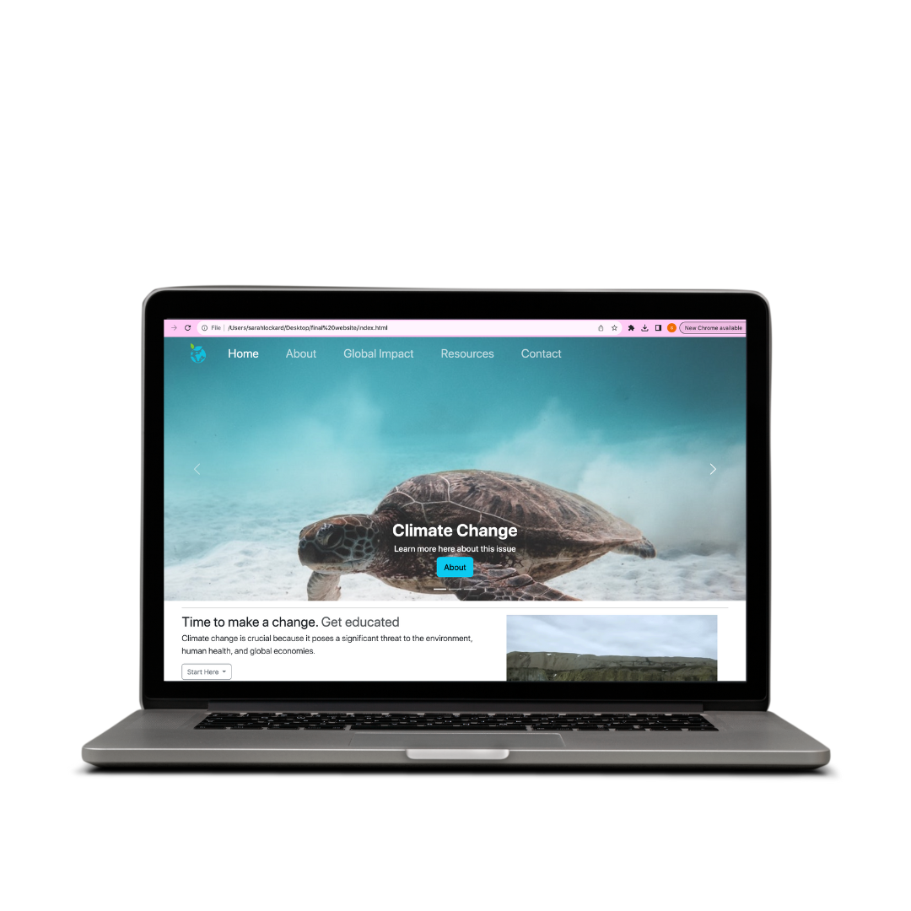

During my second semester of junior year I was given a project in one of my classes to code a multi-page website on any topic of my choosing. I chose to fill my website with information on climate change and how to get involved in solving this issue. This project allowed me a lot of creative freedom. I successfully used my HTML and CSS skills to build the structure and style of the pages. I also became proficient in working with Bootstrap and understanding how to work with or change the pre-styled components and responsive utilities during the development process. Website design projects are crucial for building my skills and knowledge of web development. It also helps to look back on these projects to see how much I have improved since.
